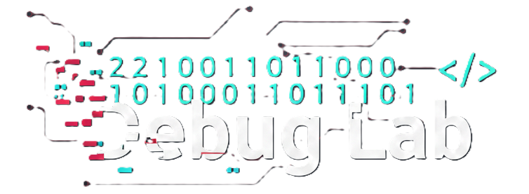

A primeira consultoria feita de QA para Você! Eliminamos o ruído do processo seletivo com triagem técnica real e desafios de código.
Não somos RH generalista. Aplicamos desafios de código e validamos lógica de programação antes do candidato chegar a você.
// Algoritmo de seleção:
if (skill === 'confirmed') {
hire();
}
Especialistas em Automação, Manual e Performance.
Sprints semanais de candidatos qualificados.
Avaliamos soft skills e fit cultural com a mentalidade de engenharia.
A Debug Lab nasceu da necessidade de elevar o nível do recrutamento. Fundada por um especialista em Qualidade, somos um time especializado em identificar talentos de tecnologia com precisão técnica e avaliação criteriosa.
Transparência Radical: Jogamos limpo sobre salários e desafios.
Rigor Técnico: Garantimos que cada perfil apresentado já passou por uma
análise técnica aprofundada.
• Hunting de QA (Automação & Manual)
• Hunting de Desenvolvedores (Back/Front)
• Hunting de outros perfis (Consultar)
• Exportação de serviços Brasil - Portugal
• Consultoria de Recrutamento Técnico.